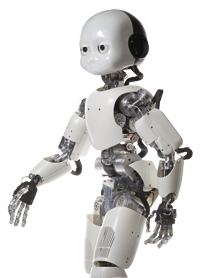

With the aim of producing a user-friendly system that can be used also by other users in the future, a software architecture is developed, thus making our software secure, safe, available, reliable, scalable, maintainable and portable.
You can download the software packages and its documentation, with examples of applications, in Download.
For more details, see Analysis of multiplayer human coordination via a novel computer-based set up.
Mirror game as paradigm to study human coordination
Coordination and synchronization between the motion of two or more individuals are
common yet complex phenomenona taking place in several daily activities, e.g., simple
oral communication, dance, sport theatre, at work.
The mirror game [1] has been recently proposed as a simple, yet powerful paradigm for
studying interpersonal human coordination between two participants. Three different
conditions are implemented:
- Leader-Follower, where one player leads the game and the other tracks her/his motion;
- Joint Improvisation, where players have to imitate each other’s motion and enjoy creating interesting movements, without any designation of leader and follower;
- Solo Condition, where one agent plays in isolation and generates spontaneous motion.
In our software, an extension of the mirror game to multiplayer scenarios is implemented.
Why this software?
Our set-up can be used in a number of different fields spanning from Psychology,
Movement and Social Sciences to Robotics.
Indeed, thanks to our platform coordination tasks can be performed while allowing (or not)
participants to share direct visual and auditory coupling, and the effects of their social
interaction can therefore be investigated.
Moreover, tasks can be easily performed and used as effective practice to train athletes
and musicians in activities where the overall performance benefits from a high level of
coordination, as in ballet, sports or music, or as a way to enhance social experience.
As in our computer-based set-up some of the players can be replaced with one or more virtual
agents, also researchers in Robotics can benefit for the development of artificial agents
able to merge and interact within a group of humans, both for rehabilitation
(as done in the European AlterEgo project)
and recreational purposes.
- [1] Noy L, Dekel E, Alon U. The mirror game as a paradigm for studying the dynamics of two people improvising motion together. Proceedings of the National Academy of Sciences. 2011;108(52):20947–20952.
Prof. Mario di Bernardo
phone: +39 081-7683909fax: +39 081-7683186
e-mail: mario.dibernardo@unina.it
e-mail: enmdb@bristol.ac.uk
Dr. Gianfranco Fiore
e-mail: gf14712@bristol.ac.ukFrancesco Alderisio
e-mail: f.alderisio@bristol.ac.ukMaria Lombardi
e-mail: maria.lombardi6@studenti.unina.itChronos is connected with the European Project AlterEgo (FP7 ICT 2.9 — Cognitive Sciences and Robotics, Grant Number 600610):

If you would like to refer to Chronos within a journal article please cite:
Study of movement coordination in human ensembles via a novel
computer-based set-up.
Alderisio F, Lombardi M, Gianfranco F, di Bernardo M. (2016).
[Read paper]
The URL http://sito can also be used when referring to the project.